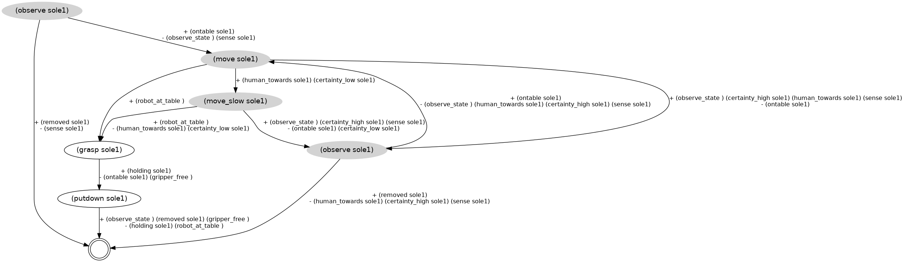
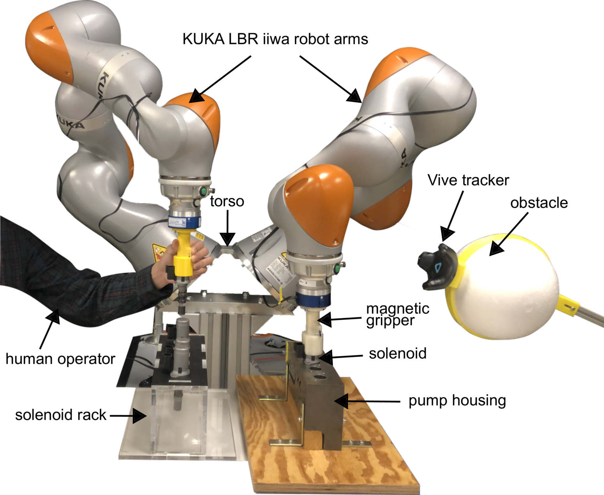
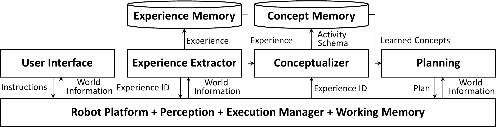
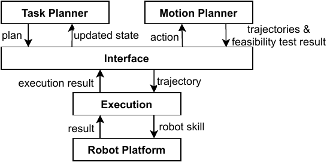
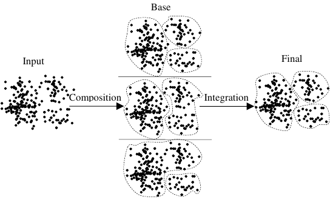

Research Line Link to heading
Automated planning has been a foundational research area within AI since the field’s inception, with researchers continually making significant contributions over decades. Planning is a decision-making technology that involves reasoning based on a predictive model of a system and deciding how and when to act in order to achieve a desired objective. It is a relevant technology for many application areas that need quick, automated and optimal decisions, such as agile manufacturing, agrifood, and logistics. My research interest primarily centers on advancing AI planning technologies and devising practical guidelines for their effective utilization in real-world applications.
Strong Planning under Uncertainty Link to heading
 A strong policy, encoding contingencies, computed by SP.
Despite major progress in classical AI planning algorithms, these methods are constrained by deterministic assumptions, where actions have predictable effects leading to a single, fully predictable outcome. However, many realworld problems are inherently non-deterministic, with unforeseeable action outcomes and unpredictable environmental changes, though outcomes can be observed. An effective solution for robots must be contingent upon observing the outcomes of their actions (see Fig. 1). In this research, we developed an offline replanning algorithm called Safe-Planner (SP) 1 for addressing planning problems under uncertainty and full observability. SP employs a bottom-up approach, translating non-deterministic planning problems into classical ones, solving them, and aggregating solutions to form a robust solution to the original problem. These strong solutions ensure goal achievement for all possible action outcomes from the initial state. SP is proven to be sound and complete, and utilizes existing classical planners without internal modifications, allowing it to adapt to the advancement in planning algorithms. This work was published in the 20th International Conference on Advanced Robotics (ICAR) 2021.
{kind=link}
- Vahid Mokhtari, Ajay Sathya, Nikolaos Tsiogkas, and Wilm Decré. 2021. “Safe-Planner: A Single-Outcome Replanner for Computing Strong Cyclic Policies in Fully Observable Non-Deterministic Domains.” In Proceedings of the 20th International Conference on Advanced Robotics (ICAR), 974-81. IEEE. https://doi.org/10.1109/ICAR53236.2021.9659475.
Autonomous Runtime Skill Composition Link to heading
To address the need for autonomous robots to operate effectively in dynamic and unpredictable environments, this research focused on integrating low-level reactive skills with high-level deliberative planning. This work addressed scenarios where pre-composing skills prior to execution becomes impractical due to disturbances, such as in human-robot collaboration scenarios where human actions are difficult to predict (see Fig. 2). We proposed a framework that automatically computes skill sequences to achieve tasks despite disturbances encountered during runtime. Our approach goes beyond conventional task planning by dynamically composing reactive skills at runtime, ensuring concurrency at the planning level. To achieve this, we employed a temporal planning model to encode symbolic actions, enabling the construction of fully concurrent actions as composed skills. Implementation and execution of these skills were done using a constraint-based robot programming language and controller. This research was published in the IEEE Robotics and Automation Letters (RA-L) 2021.
{kind=link}
- Pane, Yudha, Vahid Mokhtari, Erwin Aertbeliën, Joris De Schutter, and Wilm Decré. 2021. “Autonomous Runtime Composition of Sensor-Based Skills Using Concurrent Task Planning.” IEEE Robotics and Automation Letters 6 (4): 6481-88. https://doi.org/10.1109/LRA.2021.3094498.
 An industrial pump solenoid assembly task in a dynamic environment where unforeseen disturbances might enter the workspace, e.g., an obstacle (detected with a Vive tracker) or a force-based disturbance by a human operator (detected with force sensors). In this work, reactive robot skills are composable and computed at runtime by a task planner. When a disturbance is detected at execution time, the task planner computes online a composed behavior in order to react to the disturbance.
Experience-Based Task Learning and Planning Link to heading
My doctoral dissertation contributes towards a relatively new methodology for learning planning knowledge in experience-based planning domains to improve the planning search in certain situations. In my research, I proposed the notion of Experience-Based Planning Domain (EBPD), as an extension of the standard planning domain, which offers several significant extensions, e.g., experiences and methods for solving classes of problems. EBPDs are planning domains that are supported by a long-term learning process. The general procedure for acquiring experiences, learning planning knowledge and task planning in EBPDs is built on the conceptual framework in Fig. 3. In this system, a user interface allows a human user to instruct a robot how to carry out tasks. When a task is successfully carried out, a robot activity experience is extracted that involves the world information and the applied actions during the execution of the task. Given experiences, a conceptualizer computes activity schemata, i.e., abstract semantic structures used by a planner to find solutions in similar contexts. A guided search-based planner generates solutions to given task problems using the learned activity schemata. The utility of this system was evaluated in two real robotic platforms including a PR2 and a Kinova Jaco robotic arm where robots learn how to achieve tasks from experiences provided by a user. The outputs of this research were published in several major conferences and journals such as ICAPS, IROS, Pattern Recognition Letters, and Journal of Intelligent & Robotic Systems.
{kind=link}
-
Vahid Mokhtari, Roman Manevich, Luís Seabra Lopes, and Armando J. Pinho. 2019. “Learning the Scope of Applicability for Task Planning Knowledge in Experience-Based Planning Domains.” In 2019 IEEE/RSJ International Conference on Intelligent Robots and Systems (IROS), 3973-79. https://doi.org/10.1109/IROS40897.2019.8968013.
-
Vahid Mokhtari, Luis Seabra Lopes, and Armando J. Pinho. 2017. “An Approach to Robot Task Learning and Planning with Loops.” In 2017 IEEE/RSJ International Conference on Intelligent Robots and Systems (IROS), 6033-38. https://doi.org/10.1109/IROS.2017.8206501.
-
———. 2017. “Learning Robot Tasks with Loops from Experiences to Enhance Robot Adaptability.” Pattern Recognition Letters 99: 57-66. https://doi.org/10.1016/j.patrec.2017.06.003.
-
Vahid Mokhtari, Luı́s Seabra Lopes, and Armando J Pinho. 2016. “Experience-Based Planning Domains: An Integrated Learning and Deliberation Approach for Intelligent Robots.” Journal of Intelligent & Robotic Systems 83 (3): 463-83. https://doi.org/10.1007/s10846-016-0371-y.
-
Vahid Mokhtari, Luís Seabra Lopes, and Armando J. Pinho. 2016. “Experience-Based Robot Task Learning and Planning with Goal Inference.” In Proceeding of the 26th International Conference on Automated Planning and Scheduling, ICAPS2016, 509-17. https://dl.acm.org/doi/10.5555/3038594.3038658.
 An overview of the learning and planning framework underlying an EBPD.
Task and Motion Planning Link to heading
Integrated Task and Motion Planning (TAMP) is a dynamic area of research at the intersection of AI and robotics that studies how to produce task-motion (TM) plans and continually evaluating their feasibility against low-level geometrical constrains. A body of works have studied the TAMP problem in deterministic domains, however, real-world applications require addressing the TAMP problem under uncertainty where the robot actions might have nondeterministic outcomes. Solutions to TAMP problems under uncertainty are policies with branching structures that encode contingencies.
In this work, we proposed a framework and algorithms for generating TM policies in non-deterministic planning problems. We developed a planner-independent interface which translates between the high-level symbolic task descriptions and the low-level geometrical space (see Fig. 4). For task planning, we use Safe-Planner (see Safe-Planner) for generating strong policies to non-deterministic planning problems. When a policy is generated, its feasibility is tested through a geometric reasoning. We make a distinction between intended and unintended effects, that is, the effects producing foreseeable and unforeseeable geometrical state changes, respectively. For every root to leaf path in the policy containing only actions with intended effects, the interface calls a motion planner to generate trajectories and check the feasibility of the trajectories against certain geometric constraints, i.e., reachability and collisions. If the constraints are satisfied, the computed trajectories are added to the TM policy, and if a constraint is violated, a failure result is produced and the state is updated with a set of propositions describing the failure situation, and a new policy is attempted. This work has been developed and evaluated in simulated non-deterministic robotic tasks and presented in a workshop paper at the Robotics: Science and Systems (RSS) 2020.
{kind=link}
- Ajay Suresha Sathya, Vahid Mokhtari, Wilm Decré, Joris De Schutter. 2020. “Task and Motion Planning in Fully Observable Non-Deterministic Domains.” In: 5th Workshop on Learning (in) Task and Motion Planning, Robotics: Science and Systems (RSS), Oregon, USA (2020).
 A task and motion planning interface.
Streaming Ensemble Fuzzy C-Means Clustering Link to heading
My master thesis studied the data stream clustering problem. In this work, I proposed and developed a parallel ensemble algorithm for data stream clustering. Ensemble methods use multiple algorithms to obtain better predictive performance and more accurate and reliable results than could be obtained from any of the constituent algorithms alone (see Fig. 5). The approach was based on running several Fuzzy c-means (FCM) with varying initial configurations on a data stream and aggregating and merging the results into a final solution using a consensus function based on the co-occurrence matrix. The result of this work was presented in a conference paper and the code is also publicly available 2.
{kind=link}
- Ramin Fathzadeh and Vahid Mokhtari. 2013. An ensemble learning approach for data stream clustering." In Proceeding of the 21st Iranian Conference on Electrical Engineering (ICEE), 1-6. https://doi.org/10.1109/IranianCEE.2013.6599871.
 The general procedure of ensemble clustering including composition and integration phases.